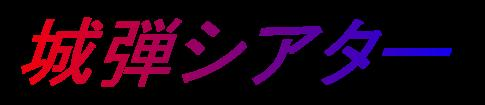
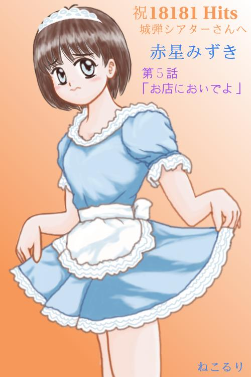

Sorry.Ｔhis site is Japanese only
開設 １９９９／ ６／ １ 開設者 城 弾（じょう だん）
一号館 ２００２／ ２／１０ 第１４話『センチメンタルジャーニー』Ｐａｒｔ３をＵＰ
あなたは当館
２５，０００ｈｉｔｓ 応援深謝
１号館
パロディ小説のコーナーです。現在の作品はこれ。
この作品は架空の格闘ゲームのノベライズです。僕が大好きな作品。『らんま１／２』（高橋留美子先生。小学館）を愛するあまり独自の視点で書いてみたものです。そこにやはり大好きな『ジョジョの奇妙な冒険』（荒木飛呂彦先生・集英社）と『ストリートファイターシリーズ』（株式会社カプコン）のエッセンスをくわえた、早い話『なんでもあり』と言う構成になっています。ご立腹の方もいらっしゃるでしょうがあまり目くじらを立てずお茶でも飲みながら笑い飛ばしていただければ幸いです。

「今度九州へと旅行することになった瑞樹たち。行く先々で『妖怪を追っかけているひと』『ロータリーエンジンの好きなお兄さん』『歌の上手な司令さん』といろんな人とであったり笑っちゃうトラブルをしているね。ホント。君たちはいろんなことをするね
次回『ミズキ図書館』第１４話『センチメンタルジャーニー』
２号館
井上喜久子さんとその公式サイト。あっとまんぼうでのオフ会などのエピソードを中心に出向いた場所の感想など書いています。
 |
□ あっとまんぼう RING □ |
３号館Ａ館・３号館Ｂ館
掲示板です。１号館の小説の感想や２号館のフォロー（笑）などにお使いください。他者の中傷などは禁止いたします。
お気に入りや知り合いのホームページへのリンクのコーナーです。
５号館
特撮の部屋です。『仮面ライダークウガ』を振りかえる『Ｐｌａｙｂａｃｋ Ｋｕｕｇａ』。そして特撮専用掲示板があります。
６号館
ロボットアニメ掲示板です。
７号館
エッセイ『喜怒哀楽』のコーナーです。
７号館へ８号館
アイドル。女優。歌手。声優。ゲーム。アニメ。コミックなどジャンルを問わず『いい女』『可愛いあの子』を語る場所です。